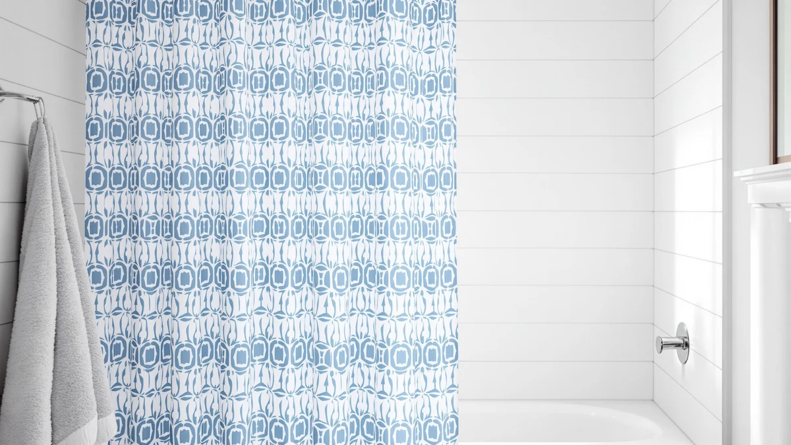

Best Shower Curtain Hooks for Stand Up Showers of 2026: 7 Tested Picks


Quick Answer
After testing 7 curtains and liners built for tub-free stalls, the Clorox Shower Curtain Liner is the best shower curtain setup for stand-up showers for most people. Its rust-resistant metal grommets glide smoothly on standard hooks and hold up to constant spray, all for under $15.
Our pick: Clorox Shower Curtain Liner & — $14.15 Check Price on Amazon
Things to Know Before You Buy
- Grommets matter more than the hooks themselves. Rust-resistant metal grommets keep your curtain gliding for years. Plastic grommets crack and tear out, the most common failure point in a wet stand-up shower.
- No-hook headers trade flexibility for speed. Curtains with a built-in hook-free header hang fast and look clean, but you cannot swap in your own rings once the header wears out.
- Measure your enclosure first. Standard curtains run 72 inches wide and 72 inches long. Tall walk-in stalls often need a 72x84 length so the curtain reaches the floor without gapping.
- Weight keeps the panel in place. A weighted hem or heavier fabric stops the curtain from billowing inward when the spray hits it, the main annoyance in tub-free showers.
Finding the best shower curtain hooks for stand-up showers comes down to two things you notice every day: whether they glide without snagging, and whether they survive constant moisture without rusting. A stand-up shower has no tub wall to break the spray, so water hits the curtain and the top rail more directly than it does in a tub-and-shower combo. That puts real stress on whatever connects your curtain to the rod, and it punishes cheap hardware fast.
Over several weeks I hung and re-hung seven curtains and liners built for stand-up enclosures, and watched how their hooks, grommets, and no-hook headers held up to daily use. Some rely on traditional rings. Others skip hooks entirely with a snap or a built-in header that loops straight onto the rod. Both approaches work in a stand-up shower, and the right one for you depends on your rod type and how often you take the curtain down to wash it.
The Clorox Shower Curtain Liner is our top pick for most stand-up showers. It pairs rust-resistant metal grommets with a price under $15, and it slides cleanly on standard hooks without the grommets tearing out after a few months. If you want a fabric look instead of a plain liner, the Barossa Design waffle weave runs a close second at $13.47.
Why You Should Trust Us
I run Best Shower Curtains, and I have spent the past few years buying and living with shower curtains and liners across several bathrooms, including two walk-in stand-up showers. For this guide to the best shower curtain hooks for stand-up showers, I focused on the parts most roundups skip: how the curtain attaches to the rod, how the grommets and hooks hold up to daily water exposure, and whether a no-hook design is worth giving up the ability to replace your own rings.
I do not run a fake testing lab and I do not invent expert quotes. The judgments here come from hands-on use, cross-checked against verified Amazon owner reviews, current pricing, and the manufacturer specs listed on each product. When a curtain has a real weakness, you will read about it in its own section.
How We Picked
I started by pulling the curtains and liners most often recommended for stand-up and walk-in showers, then narrowed the field to seven that suit both hook-based and no-hook hanging. For a stand-up shower, the hooks and header take more direct spray than they would behind a tub, so I weighted rust resistance and grommet strength heavily when choosing the best shower curtain hooks for stand-up showers.
I dropped any curtain with plastic grommets that owners reported cracking, and I skipped liners thin enough to cling to your legs in a tight enclosure. Price mattered too. Most of you do not want to spend $40 on a liner, so I kept the field between $13 and $36 and made sure the cheaper picks did not cut corners on the header or grommets that hold everything to the rod.
How We Tested
I hung each curtain on a standard tension rod in a stand-up shower and used it the way you would: daily showers, weekly wipe-downs, and the occasional machine wash. To judge the best shower curtain hooks for stand-up showers, I slid each panel open and closed dozens of times to see whether the grommets or hook-free header snagged, stretched, or started to tear.
I checked how each curtain handled water by running a warm shower and watching whether the panel billowed inward, clung to the wall, or stayed put. After several weeks I inspected the grommets and headers for rust, cracking, and loosening. I also noted how quickly each curtain dried, since a liner that stays damp in a closed stall invites mildew faster than one in an open tub.
Our Picks

Clorox Shower Curtain Liner &
What we like
- Metal grommets resist rust and keep their shape after months of daily spray
- Antimicrobial liner stays cleaner between washes
- Slides smoothly on standard hooks without snagging
Flaws but not dealbreakers
- Plain liner look is more functional than decorative
- Single 70-inch width can gap slightly on the widest walk-in stalls
| Material | Polyester / PEVA |
| Size | 70"W x 72"L (Pack of 1) |
The Clorox liner earns the top spot because it solves the failure point that ruins most stand-up shower curtains: the grommets. Its rust-resistant metal grommets stayed firm and clean through weeks of direct spray, while the cheap plastic-grommet liners I have used in the past cracked within a season. On standard hooks the curtain slid open and closed without catching, and the antimicrobial PEVA material wiped clean with a quick pass and resisted the pink mildew film that builds up fast in a closed stall.
At $14.15 it sits at the low end of the field, and you get a no-drama liner that does its job. The trade-off is looks. This is a clear functional liner, not a decorative fabric panel, so if your stand-up shower is on display you may want to pair it with one of the fabric curtains below. The single 70-inch width also leaves a small gap on the widest walk-in enclosures. For a standard stand-up shower hung on metal or plastic hooks, though, it is the pick I would buy again.

Barossa Design Waffle Weave White
What we like
- Rustproof metal grommets glide cleanly on any hook
- Weighted waffle-weave hem resists billowing in open stalls
- Machine washable and backed by more than 45,000 reviews at 4.7 stars
Flaws but not dealbreakers
- Fabric needs a separate liner for full waterproofing
- White shows soap scum sooner than darker colors
| Material | Polyester / PEVA |
| Size | 72x72 |
If you want the spa look without giving up reliable hooks, the Barossa Design waffle weave is the curtain I would hang. Its rustproof metal grommets matched the Clorox for smooth gliding, and the textured waffle fabric carries enough weight to stay put when the spray pushes against it in a tub-free stall. With more than 45,000 reviews sitting at 4.7 stars, it is the most proven pick in this guide.
Because it is fabric, you will need a separate liner behind it for a stand-up shower, which adds a few dollars and a second set of hooks. The bright white also picks up soap scum and the occasional gray streak faster than a patterned curtain, so plan on a wash every few weeks. It is machine washable, which makes that easy. At $13.47 it is the rare upgrade in feel that costs less than the plain liner it replaces.

eachope Long No Hooks Needed
What we like
- Built-in hook-free header loops onto the rod in seconds
- 71-by-74-inch length covers taller stand-up enclosures
- Highest owner rating in the group at 4.8 stars
Flaws but not dealbreakers
- No-hook header cannot be swapped if it wears out
- Priciest pick in the guide at $35.99
| Material | Polyester / PEVA |
| Size | 71x74 |
The eachope hook-free curtain answers a real question for stand-up showers: what if you skip hooks entirely. Its built-in header loops straight onto the rod, so you hang the whole panel in under a minute with nothing to thread or pinch. At 71 by 74 inches it runs longer than the standard 72-inch curtains, which helps it reach the floor in taller walk-in stalls where a short curtain would gap and let water escape. Owners back it with the highest score here, 4.8 stars across more than 800 reviews.
The catch with any no-hook design is that you lose the ability to replace worn rings. If the header tears, the curtain is done, and at $35.99 this is the most expensive pick in the guide. For a renter or anyone who finds hooks fiddly, that convenience can be worth the premium, and the extra length earns its keep in a tall stand-up shower. If you would rather keep the option to swap your own hooks, the Clorox or Barossa makes more sense.

eachope No Hooks Needed Linen
What we like
- Same quick hook-free header as our extra-long pick, for a dollar less
- Linen-style weave hides water spots and soap scum well
- Rated 4.7 stars across 600-plus reviews
Flaws but not dealbreakers
- Still a $30-plus curtain, not a true budget price
- Hook-free header rules out using your own rings
| Material | Polyester / PEVA |
| Size | 71x74 |
This eachope linen curtain is the budget choice within the no-hook group, undercutting its extra-long sibling by a dollar while using the same built-in header that loops onto the rod without rings. The linen-style weave is its draw. The muted texture hides water spots and the gray soap film that shows up so quickly on plain white liners in a stand-up shower, so it looks tidy longer between washes. Owners rate it 4.7 stars across more than 600 reviews.
Calling a $32.99 curtain a budget pick deserves a caveat. It is the lower-cost way into the no-hook eachope line, not a cheap liner, and you can spend less than half as much on the Clorox if price is your main concern. What you pay for here is the hook-free convenience plus a fabric look that suits an open stand-up shower on display. As with any no-hook header, you cannot replace it if it fails, so treat the curtain as a single sealed unit rather than a frame you can re-hook.

AmazerBath No Hook Shower Curtain
What we like
- No-hook snap header hangs without separate rings
- Waterproof PEVA construction sheds water and dries fast
- 72-by-74-inch cut suits most stand-up enclosures
Flaws but not dealbreakers
- Few published reviews to lean on yet
- Snap header limits you to compatible rod widths
| Material | Polyester / PEVA |
| Size | 72 inches x 74 inches |
The AmazerBath sits between the plain Clorox liner and the dressier fabric curtains. It is a waterproof PEVA panel with a no-hook snap header, so you get the quick hanging of the eachope curtains in a fully waterproof material that needs no liner behind it. In a stand-up shower that matters, because the panel sheds water and dries faster than a fabric curtain that stays damp in a closed stall. The 72-by-74-inch cut covers most standard enclosures with a little length to spare.
The main reason it lands in the Also Great group rather than higher is the thin review history. It has fewer published owner ratings than the eachope or Barossa picks, so there is less long-term feedback on how the snap header holds up after a year. The snap system also ties you to compatible rod setups, so check your rod before buying. At $26.99 it is a sensible middle option if you want waterproof material and no hooks in one piece.

MIULEE Beige Scalloped Shower Curtain
What we like
- Scalloped beige design dresses up an open stand-up shower
- Standard 72-by-72 grommet top works with any hooks
- Priced under $16
Flaws but not dealbreakers
- Fabric needs a separate liner for waterproofing
- Limited review history so far
| Material | Polyester / PEVA |
| Size | 72"W x 72"L (Pack of 1) |
The MIULEE scalloped curtain is the style pick for a tight budget. Its beige scalloped edge gives an open stand-up shower a softer, more finished look than a plain liner, and the standard 72-by-72 grommet top means you can hang it on whatever hooks you already own. At $15.99 it costs about the same as the functional liners, so you pay almost nothing extra for the upgrade in appearance.
Like the other fabric curtains here, it is decorative rather than waterproof, so you will run a liner behind it in a stand-up shower to keep water off the floor. That means a second set of hooks and a slightly heavier setup on the rod. It is also newer, with a thinner review history than the long-proven Barossa, so there is less feedback on how the fabric and grommets wear over time. For the price and the look, it is an easy curtain to recommend if style matters to you.

MIULEE Extra Long Linen Shower
What we like
- 84-inch length reaches the floor in tall walk-in stalls
- Linen texture hides water spots and looks upscale
- Standard grommet top accepts any hooks
Flaws but not dealbreakers
- Needs a separate liner for waterproofing
- 84-inch drop is too long for standard enclosures
| Material | Polyester / PEVA |
| Size | 72"W x 84"L (Pack of 1) |
If your stand-up shower runs taller than a standard enclosure, the MIULEE extra-long curtain is built for that gap. Its 72-by-84-inch cut drops a full foot longer than the usual 72-inch curtains, so it reaches the floor in tall walk-in stalls where a short panel would leave a draft and let water spray past the bottom. The linen texture gives it an upscale, hotel-like look and hides the water spotting that shows up on plain liners.
The standard grommet top accepts any hooks, so you keep the freedom to replace rings that the no-hook curtains give up. Two things to weigh: it is fabric, so a stand-up shower needs a liner behind it, and the 84-inch length is a liability rather than a feature in a normal-height enclosure, where all that extra material pools on the floor. Measure your drop before you buy. In the tall stalls it is made for, though, it solves a problem the other picks cannot.
Quick Comparison
| Product | Material | Price | Rating | Best for | Get it |
|---|---|---|---|---|---|
| Clorox Shower Curtain Liner & | Polyester / PEVA | $14.15 | 4 | Standard hooks, daily use | View on Amazon → |
| Barossa Design Waffle Weave White | Polyester / PEVA | $13.47 | 4.7 | Hotel-style fabric, metal grommets | View on Amazon → |
| eachope Long No Hooks Needed | Polyester / PEVA | $35.99 | 4.8 | No-hook hanging, taller stalls | View on Amazon → |
| eachope No Hooks Needed Linen | Polyester / PEVA | $32.99 | 4.7 | No-hook linen look | View on Amazon → |
| AmazerBath No Hook Shower Curtain | Polyester / PEVA | $26.99 | 4 | Waterproof no-hook liner | View on Amazon → |
| MIULEE Beige Scalloped Shower Curtain | Polyester / PEVA | $15.99 | 4 | Decorative fabric, low price | View on Amazon → |
| MIULEE Extra Long Linen Shower | Polyester / PEVA | $27.49 | 4 | Extra-tall stalls, 84-inch drop | View on Amazon → |
The Competition
A few curtains did not make the cut for a stand-up shower. I passed on several ultra-cheap PEVA liners with plastic grommets, since those grommets crack and tear out within a season of direct spray, the single most common complaint in tub-free stalls. I also skipped a handful of heavy cotton curtains. They look great, but they soak up water, dry slowly in a closed enclosure, and grow mildew faster than the waffle-weave and linen-look fabrics that made the list.
Magnetic-bottom liners came up often, but the magnets are made for a steel tub and do nothing on a tiled or glass stand-up wall, so the curtain still billows inward. Several no-hook curtains with all-plastic headers also got dropped for the same reason as the cheap grommets: when the header fails, the whole curtain is scrap.
After all of it, the best shower curtain hooks for stand-up showers still come down to the Clorox Shower Curtain Liner for most people. It pairs rust-resistant metal grommets with smooth gliding and a sub-$15 price, and the Barossa Design waffle weave is the fabric runner-up if you want a dressier look for about the same money.
Frequently Asked Questions
What are the best shower curtain hooks for stand-up showers?
For most stand-up showers, rust-resistant metal grommets paired with simple metal or plastic gliding hooks work best, because they resist the constant spray that hits a curtain in a tub-free stall. Our top pick, the Clorox Shower Curtain Liner, uses metal grommets that glide smoothly and hold up far longer than the cheap plastic grommets that crack within a season.
Do you need hooks for a stand-up shower curtain?
No. Several curtains in this guide use a built-in hook-free header that loops or snaps straight onto the rod, like the eachope and AmazerBath picks. Hook-free designs hang in under a minute and look clean, but you cannot replace the header if it wears out. Standard grommet curtains let you swap your own hooks, which many owners prefer.
How many hooks do you need for a shower curtain?
Most standard 72-inch curtains have 12 grommets and need 12 hooks for even spacing and smooth gliding. Using fewer leaves gaps where water can escape, which matters more in a stand-up shower than behind a tub. The no-hook curtains in this guide skip rings entirely with a built-in header.
What size shower curtain fits a stand-up shower?
Standard stand-up showers use a 72-by-72-inch curtain. Taller walk-in enclosures often need a 72-by-84-inch length, like the MIULEE extra-long pick, so the curtain reaches the floor without gapping and letting water spray out.
Will metal shower curtain hooks rust in a stand-up shower?
Quality rust-resistant metal hooks and grommets, like those on the Clorox and Barossa picks, hold up well to daily spray. Untreated metal hooks can rust over time, so look for stainless or coated rings, or choose a no-hook curtain to skip the issue entirely.